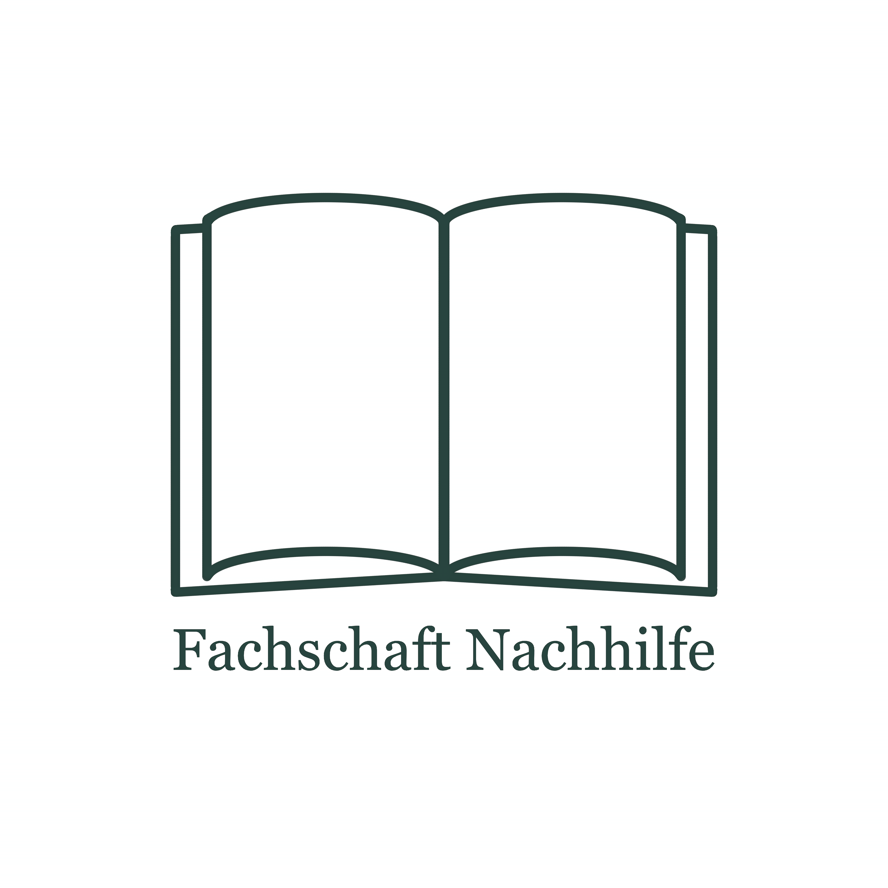
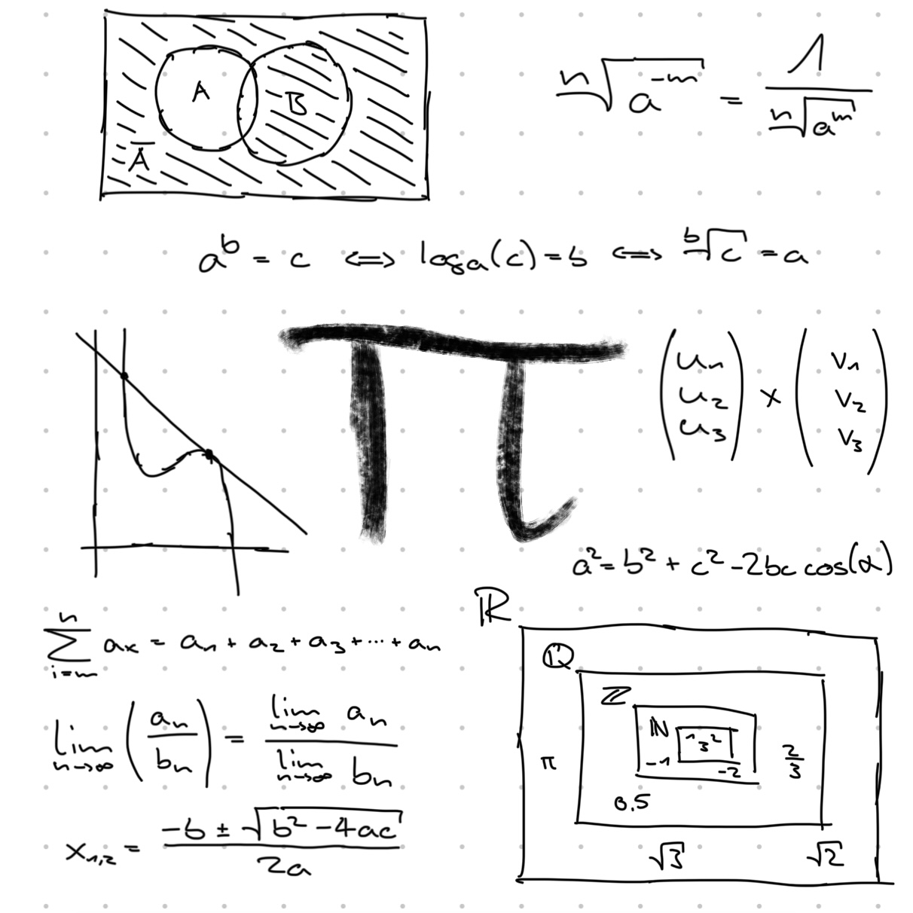
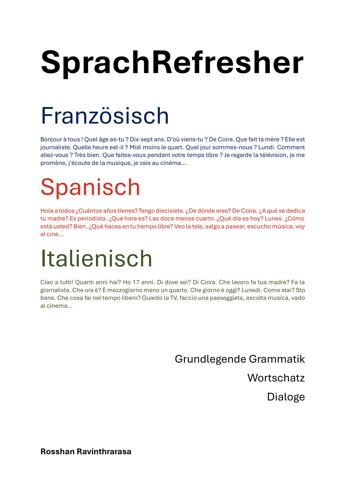
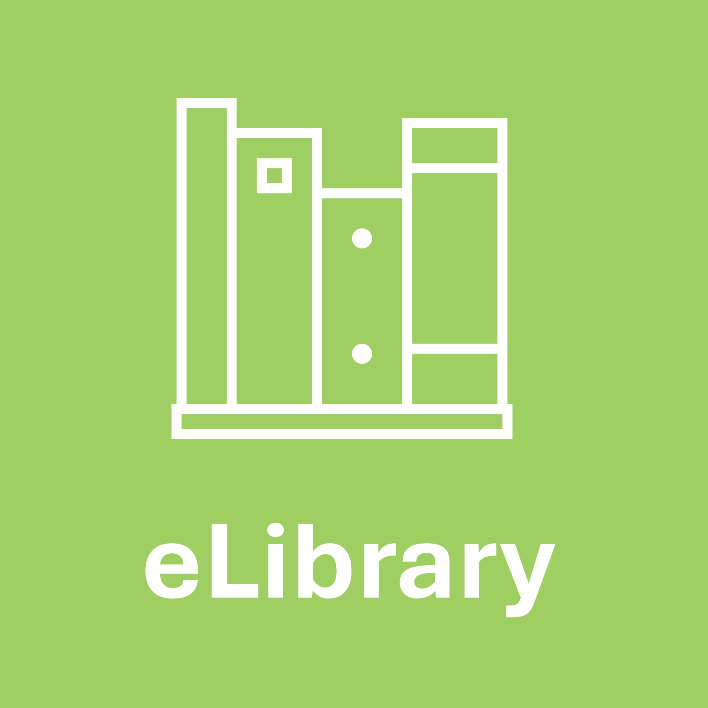

×

Heute wurde der Verein "Fachschaft Nachhilfe" gegründet und die eLibrary ist die offizielle Vereinsbibliothek, in der der öffentliche Teil der Dokumente, Literatur und demnächst auch Multimedia abgelagert wird. Erwähnenswert ist ebenfalls, dass die eLibrary der Anbieter für die Bibliothek ist und somit die digitalen Ressourcen zur Verfügung stellt. Die eLibrary ist keine offizielle Website der Fachschaft Nachhilfe. Der Link zur offiziellen Website der Fachschaft Nachhilfe ist in der Vereinsbibliothek auffindbar. Für die Eröffnung der Vereinbibliothek wurden ebenfalls verschiedene Dinge auf der Website geändert, was nun unter eLibrary v.1.3 verfügbar ist. Viel Spass!

Die Maturaprüfungen (MP26) stehen an! Dementsprechend werden unzählige Werke für die Abschlussprüfungen veröffentlicht: "Wissenschaften fürs Gymnasium"-Reihe, "Französische bzw. Lateinische bzw. Spanische Morphologie, Syntax und Literatur", "Sprachunterricht. Wie pädagogisch wertvoll ist er?", diverse Zusammenfassungen, die neue Kategorien "Exakte Wissenschaften", "Vorbereitungsskript (Maturaprüfungen 2026)" (im Explorer) und gibt es weitere Schullektüren auf Französisch (Zweitsprache) (im Explorer) zu entdecken. Natürlich gab es auch kleine technische Feinheiten und diverse Umstrukturierungen seit dem letzten grossen Update von vor acht Monaten, die alles in allem in der neusten Version 1.2 resultiert. Viel Spass und viel Glück an die Prüfungskandidatinnen und Prüfungskandidaten!

Die neue Version von eLibrary kommt am 9. August 2025! Neue Funktionen, wie der Explorer oder die Suchfunktion, sind verfügbar. Ebenfalls werden zahlreiche Werke veröffentlicht, wie z.B. BKS Assistant v.3.0, Il fundament rumantsch sursilvan, SprachRefresher und Literaturjournal 2024 / 2025. Weitere Projekte werden präsentiert, wie z.B. die WfG-Reihe. Viel Spass!

Die eLibrary öffnet offiziell seine digitalen Tore. In dieser Biblitohek gibt es nun die Startseite, wo alle Werke, wie die Maturaarbeit, präsentiert werden und diese News-Seite, die alle wichtigen Themen zu dieser Bibliothek auffassen. Weitere Funktionen in der eLibrary und Veröffentlichung von neuen Werken folgen.
